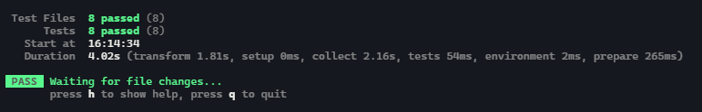

Como verás la estructura de ficheros de src es la siguiente. Por cada función que tenemos que implementar en motor hemos creado un fichero de test. Tendrás que implementar el código de cada función que está en el fichero de motor, y el siguiente paso será implementar los test correspondientes.
barajarCartas
Esta función recive como parámetro un array de cartas y devuelve un array de cartas ya barajada. Para que sea fácil (esta función tiene algo de dificultad), te dejamos este hilo de stackoverflow donde se ven diferentes maneras de abordar el barajado de elementos.
sePuedeVoltearLaCarta
Aquí podremos indicar si se puede voltear o no (true o false) la carta pulsada en el html. Recuerda que cada carta tiene los flags estaVuelta y encontrada donde podremos checkear esto.
voltearLaCarta
Esta función será la encargada de modificar el objeto tablero. Lo primero será poner a true la propiedad de estaVuelta (que indica que ha sido volteada la carta que sea). Lo siguiente, será ver si el indice de la carta que hemos pulsado se tiene que guardar en el indiceCartaVolteadaA o indiceCartaVolteadaB (estas dos propiedades guardarán de manera provisional los indices para luego comprobar si son o no pareja). ¿Cómo podemos diferenciar si el indice va al A o al B? La pista está en el estado de la partida. Cuando iniciamos la partida, el estado está en 'CeroCartasLevantadas', si cuando pulso sobre la primera carta, ese es el estado, entonces el indice tiene que ir a indiceCartaVolteadaA, y por lo tanto el estado pasa a 'UnaCartaLevantada'. El siguiente punto es muy sencillo, si el estado cuando pulsamos sobre la segunda carta es 'UnaCartaLevantada' podemos añadir el índice a indiceCartaVolteadaB y cambiar el estado a 'DosCartasLevantadas'.
sonPareja
Esta es la más fácil de todas, saber si la idFoto de la primera y segunda carta que hemos pulsado son el mismo o no.
Pista: Puedes usar el array method every que comprueba si todos los elementos de un array cumplen con la condición que le indiquemos.
parejaEncontrada
Esta función se encargará de modificar de true a false la propiedad de encontrada. Acuérdate de que para poder encontrar la siguiente pareja, las propiedades de estaVuelta, el estado de la partida y los índices A y B tienen que estar de nuevo como al prinicipio, estaVuelta a false, los índices A y B a undefined y el estado a 'CeroCartasLevantadas'.
parejaNoEncontrada
Lo mismo que la anterior, pero con la diferencia de que en vez de modificar encontrado, ahora será volver a false la propiedad de estaVuelta.
esPartidaCompleta
Si todos los elementos cumplen con la condición de que la propiedad encontrada está a true, la partida está completa, en caso contrario false.
Pista: Puedes hacerlo muy fácil con el array method every.
iniciaPartida
Esta función se ejecutará cuando pulsemos sobre el botón de iniciar partida. Aquí tendremos que hacer varias cosas.
Una vez implementadas todas las funciones con los respectivos test, tocará ver si todos los test están en verde o tenemos algún fallo. Acuérdate de eliminar la linea de por defecto tienen todos los test: expect(true).toBe(true); e implementar el código real de tus tests. Todos los test se encuentran en la carpeta de ./src/test

Una vez te asegures que todos los test pasan, puedes copiar el contenido del fichero de motor de este proyecto a la implementación del ejercicio entregable.
También puedes crearte una carpeta de test, y copiar todos los test que has ido creando como está en este proyecto, un fichero por cada función y dentro los diferentes test.